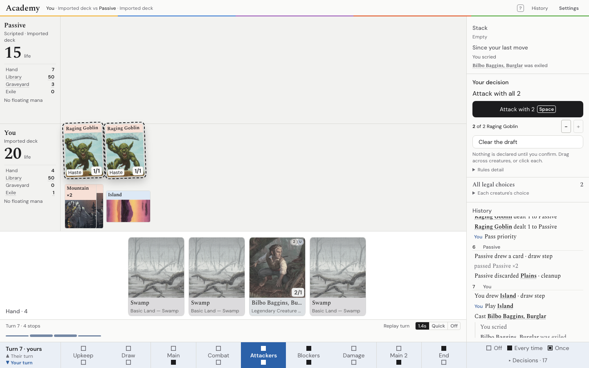
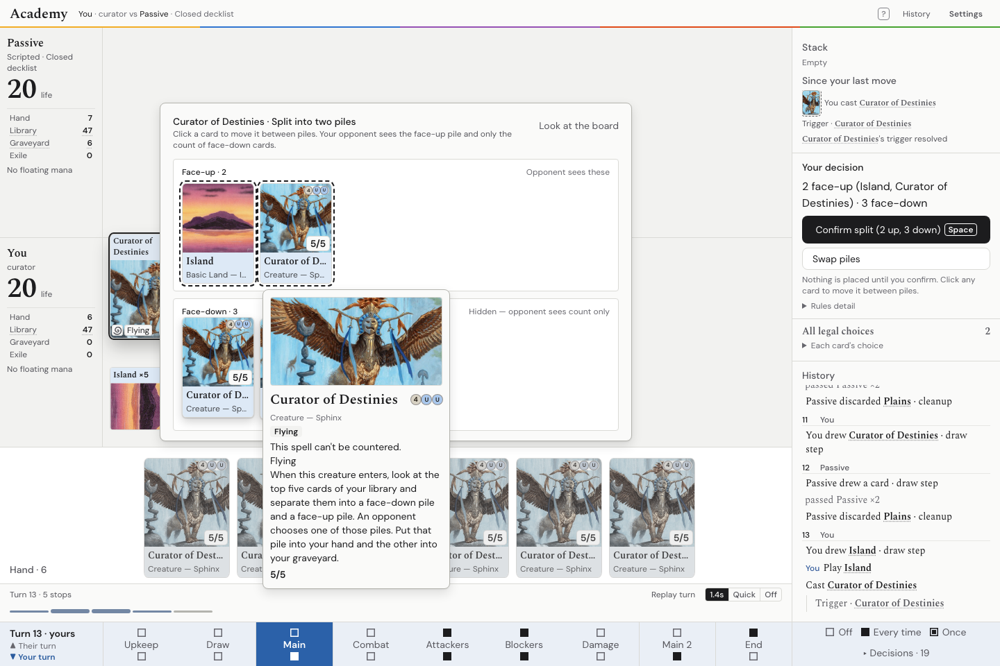

PR #623 · branch jack/mtg-483-audit-batchable-academy-decisions-and · page scratch/ship-review.html · 2026-11-26 (headless ship-review, nobody present)
In Academy: attacks, blocks, Scry, Surveil, library ordering and Curator-style pile splits are drafted whole and sent as one decision_group_command. The whole plan lands or none of it does, and the engine's refusal is shown beside the draft. The browser no longer runs send loops, regex-scrapes labels or re-implements legality. Replay and Study still show one recorded decision per native step.


In Python managym: Env has one decision surface, and env.step(action: int) remains one flat RL step. This is real output from this checkout (tests/env/test_decision_group.py setup, seed 19):
from managym.decision_group import DeclareAttackersChoice
d = env.decision() # always the pending decision
# SingleDecision {'viewer': 0, 'revision': 1, 'fingerprint': 'e7661335…1536'}
# offer 0 choose_mode 'Keep hand'
# offer 1 choose_mode 'Mulligan'
d = env.decision() # later, at declare attackers
# DeclareAttackersDecision declarable: [('Gray Ogre', ObjectRenderId(entity=86, incarnation=2))] committed: []
choice = DeclareAttackersChoice(attackers=[a.item for a in d.declarable])
p = env.preview(choice) # read-only, on a clone
# preview complete: True refused: None steps: [0]
env.submit(choice, at=d.address) # stale address → AgentError, game untouched
# digest moved: True next: SingleDecisionYour earlier questions, answered by the shipped API:
| You asked | Answer |
|---|---|
| “step taking a plan is ambiguous” | step never takes a plan. submit(choice) runs the whole grouped choice; submit(offer_id) runs one offer. |
| “what does this return if you're half way through stepping through attackers” | Still a DeclareAttackersDecision: committed holds the attackers already declared and declarable holds the rest. |
“Is this actually used” (compound_offers/step_structured) | They are used only by Study branches and the action benchmark. They now warn as deprecated, for removal in 0.3.0. |
| “group should be called DecisionGroup”, “I dont know that we need the word ‘offer’ anymore in the core code” | The names are now managym/decision_group.py, flow/decision_group/, decision_group_command and /decision-group-preview. structured_offer.rs is now decision_surface.rs, and Env.decision_surface() replaces structured_search_offers, which remains as a deprecated 0.3.0 wrapper. |
./scripts/play
# attack with several creatures → Confirm (Space); DevTools → Network → WS shows one decision_group_command
# Scry 2 / Surveil 2: arrange in the panel, one Confirm; then open the game in Replay to see per-step decisions
uv run python -m pytest tests/env/test_decision_group.py tests/academy/test_decision_group_command.py -q
uv run python scripts/public_api.py checkprotocol/experience-v1.schema.json did not change. The live group travels beside frame and only to seats that can submit, so frame_hash does not move for retained replays. Watchers never see private Scry/Surveil cards.skip_trivial.decision_surface rename missed one path. conformance/public_commitment_parity.py still hashed the deleted managym/src/agent/structured_offer.rs, so scripts/verify-public-commitment-parity would have stopped with a missing-file error. It now hashes decision_surface.rs. Frozen conformance JSON keeps its old path, as frozen evidence must.| Finding | Proposal |
|---|---|
| Pick kind (SelectCards with max > 1, SearchDistinctNames, Discard 2+, OpponentSplitsRevealed, KeepCreatures); Amounts kind (DistributeCounters, DivideAmongTargets, AssignCombatDamage); OrderTriggers when no mode or target interleaves | Filed as one Task: c44b11 “Extend DecisionGroup to Pick, Amounts and OrderTriggers decisions” (Academy wave; Linear sync pending). |
| No UI test for the opponent-side ChoosePile view | Included in c44b11. |
A discard payment's instruction says “or decline when offered” even when no decline is offered (managym/src/decision_context.rs) | Included in c44b11, because the text also feeds LLM text and fixtures. |
The combat_preview, structured_offers/compound_* and structured_search_offers wrappers | Drop: they are tagged 0.3.0, so rollover finds them. |
CI on b479f2abd1 (the DecisionGroup rename): success. CI on d614700722 (the decision_surface rename) and on this pass's commit: running at write time; delivery waits for them.
c44b11: (a) one Task (current); (b) split Pick, Amounts and OrderTriggers.You approved shipping on 2026-11-26 (“otherwise this lg2m an we should ship it”); the renames you asked for afterwards are in. With nobody present, this step goes on to delivery.